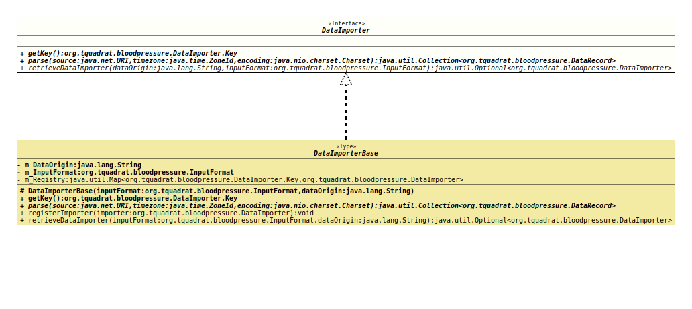

- All Known Implementing Classes:
BlutdruckdatenCSVImporter,DataImporterBase
@ClassVersion(sourceVersion="$Id: DataImporter.java 119 2022-02-10 18:55:45Z tquadrat $")
@API(status=STABLE,
since="0.0.1")
public sealed interface DataImporter
permits DataImporterBase
The definition for a component that imports data from a specified source.
- Author:
- Thomas Thrien (thomas.thrien@tquadrat.org)
- Version:
- $Id: DataImporter.java 119 2022-02-10 18:55:45Z tquadrat $
- Since:
- 0.0.1
- UML Diagram
-

UML Diagram for "org.tquadrat.bloodpressure.DataImporter"
{kind=link}
-
Nested Class Summary
Nested ClassesModifier and TypeInterfaceDescriptionstatic classThe abstract base class for the data import components. -
Method Summary
Modifier and TypeMethodDescriptiongetKey()Returns the registry key for this data importer.Parses the data on the given source location and returns a collection ofDataRecordinstance.static Optional<DataImporter>retrieveDataImporter(String dataOrigin, InputFormat inputFormat) Returns the data importer that is identified by the given data origin and input format.
-
Method Details
-
getKey
Returns the registry key for this data importer.- Returns:
- The key.
-
parse
Parses the data on the given source location and returns a collection ofDataRecordinstance.- Parameters:
source- The location for the source data.timezone- The time zone for the timestamp on the source data.encoding- The encoding of the source data.- Returns:
- The data records.
- Throws:
IOException- Something went wrong while pulling the data from the source.
-
retrieveDataImporter
Returns the data importer that is identified by the given data origin and input format.- Parameters:
dataOrigin- The identifier for the data origin.inputFormat- The input format.- Returns:
- An instance of
Optionalthat holds the retrieved data importer.
-